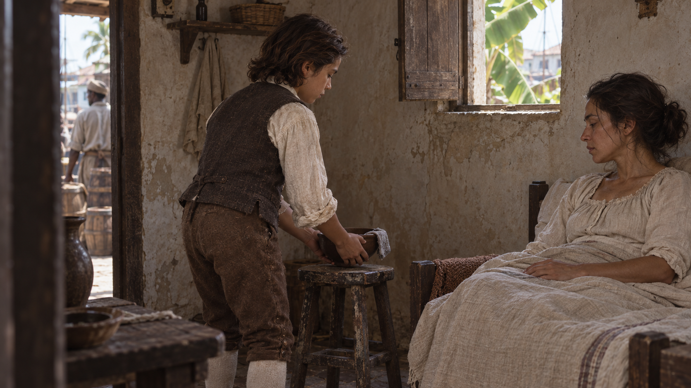
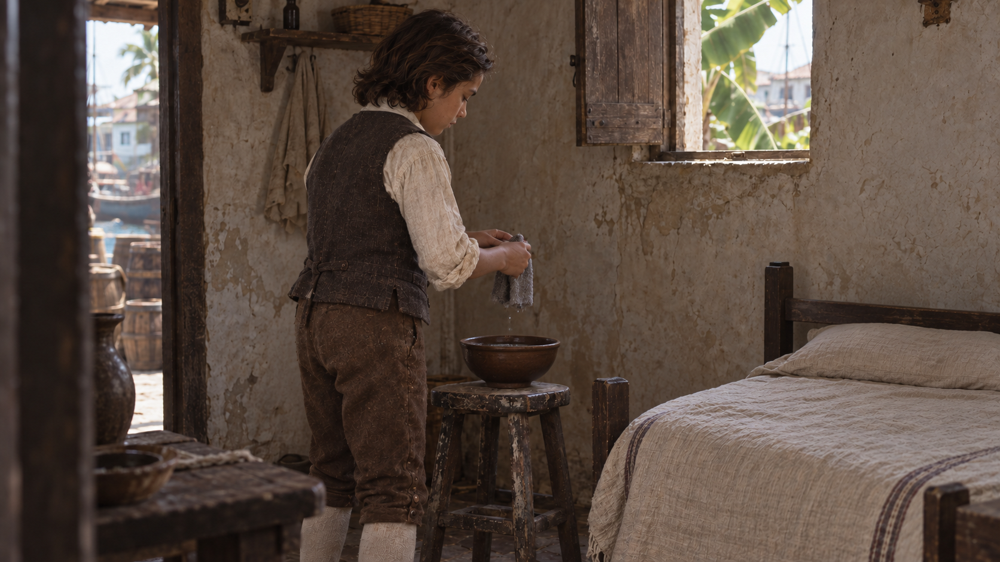
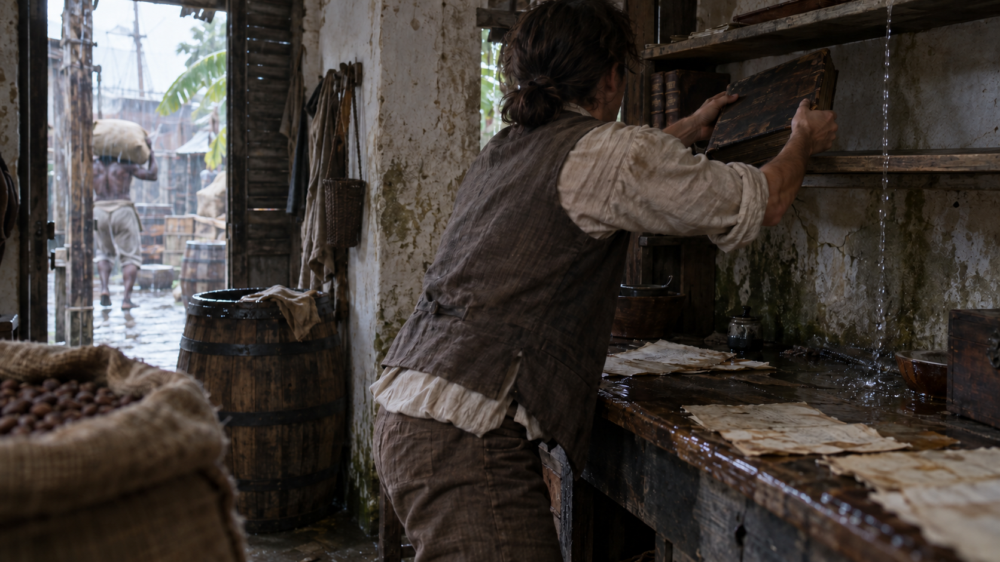
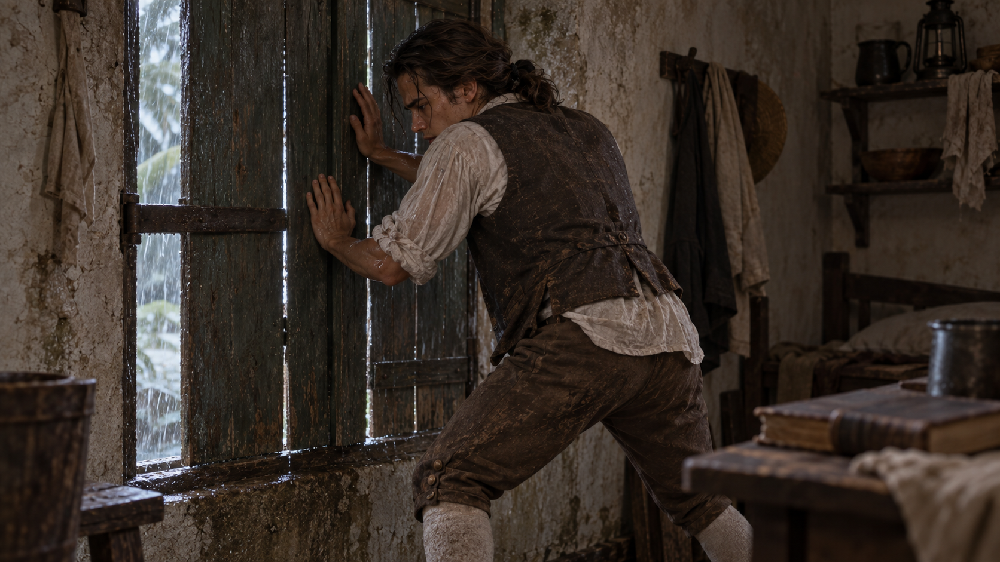
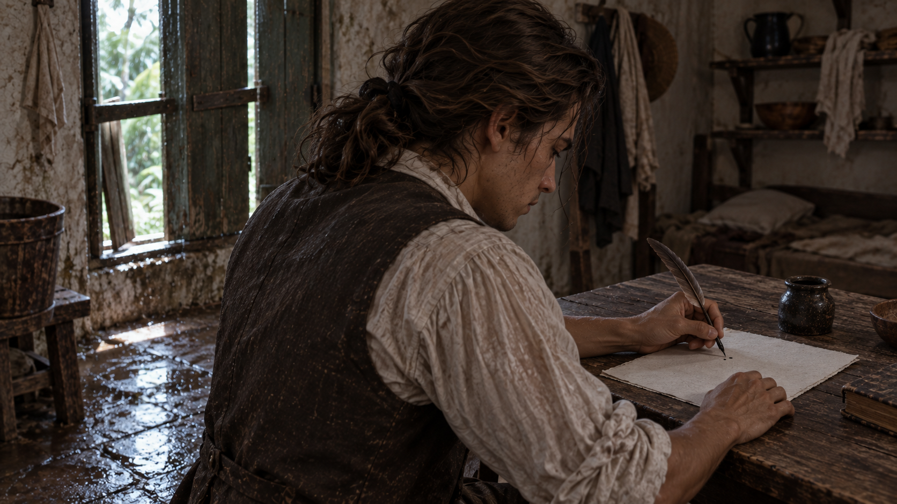
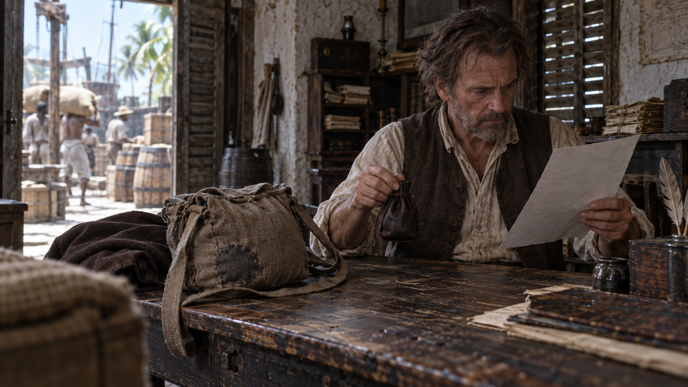
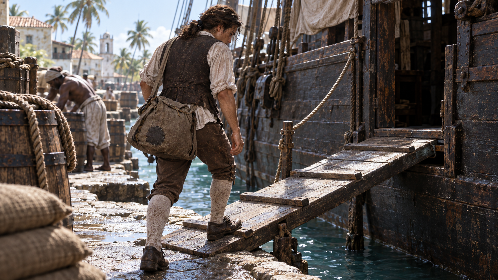

最新流程：先看完全部首帧
按用户要求，停止额外视频测试。进入v4首帧统一制作，全部图片看完后再决定视频生成。下方保留旧分镜与操作记录。
S05已成功生成，进入字迹修正
用户认可除书写外的整体效果。查看首条视频评审。接下来修正S05并测试S07；原清单尚未替换为全套正式首帧，暂不执行全片生成。
先确认人脸素材能被接受
本包为外部AI生成的虚构人物。官方没有明确保证这类写实首帧一定接受，也不将它们视为本方舟账号的受信任原始产物。先测露脸的S05，不能只用背影图通过来代替。
若遇到人脸输入审核，按完整手册及 备用流程，在同一方舟账号使用Seedream5.0 lite/pro文生图，保留原始产物再测试。该分支会重新生成首帧，人物、房间与道具须重新验收，不能保证恢复相同脸型。
依据：官方人像与受信任产物规则。
全片播放顺序
照料母亲 → 空床 → 商行劳动 → 风灾 → 写作 → 获得帮助 → 登船离开。
以缺席转译失去母亲，空床本身不逐字说明死因。读者的钱袋与下一镜相同旅行包连接帮助和离岛。年龄变化只在S02→S03剪辑时发生。
| 镜号 | 成片 | 生成 | 初始取用 |
|---|
| S01 照料仍在继续 | 0–7秒 | 12秒 | 原片1–8秒 |
| S02 位置空了 | 7–14秒 | 12秒 | 原片1–8秒 |
| S03 保护账册 | 14–24秒 | 12秒 | 原片1–11秒 |
| S04 风压 | 24–34秒 | 12秒 | 原片1–11秒 |
| S05 自己的文字 | 34–44秒 | 12秒 | 原片1–11秒 |
| S06 文章获得支持 | 44–57秒 | 15秒 | 原片1–14秒 |
| S07 登船离开 | 57–68秒 | 15秒 | 原片1–12秒 |
时码是剪辑目标，实际取点须保留动作结果与停顿。固定首帧模式用 ratio: adaptive，不同时上传人物三视图或其他参考图。官方字段依据
S01照料仍在继续
0–7 秒 · 生成 12 秒 · 初始取原片 1–8 秒

先建立母子间仍在发生的照料。 门内固定中景；母亲、孩子与碗处于同一空间。
生成一条12秒、正常速度的连续实景电影镜头。以输入的单幅首帧为准确起点，保持人物身份、年龄、衣装、道具、空间与原有画幅。场景属于18世纪加勒比港镇。摄影机全程固定在首帧位置，焦距、对焦距离、取景范围不变；不推拉、不摇移、不环绕、不变焦、不拉焦、不手持晃动，不因人物移动而自动追拍。沿用首帧不均匀的自然光与真实使用痕迹，环境保持可辨，不增加美容光、舞台聚光、油画纹理、金尘或棕金滤镜。
首帧中孩子是站立的，双手托着水碗，碗已接近床边小凳，灰色湿布搭在碗沿；母亲坐靠床头，手放在被褥上。不要把孩子改成坐姿，不要改变母亲的位置。
0–1秒延续已有动作。1–3秒孩子把碗轻放到现有小凳中央，两手持续承托直到碗底落稳。3–5秒孩子松开碗，双手自然垂低至身体两侧。5–12秒维持站立，母亲保持原有坐姿与轻微自然呼吸，不伸手接碗、不饮水、不起身。灰布仍留在碗沿。门外原有背景人物只沿原方向缓慢离开，不进入房间。
只完成上述动作，不添加第二件事。人物不看镜头、不仰望、不微笑宣誓、不表演泪眼、不做说话口型。手指、物体接触、衣服和主要道具保持稳定，不穿透、不复制，不凭空增减人物或物品。无可读文字、字幕、标题或水印。无对白、独白、旁白、配音、歌唱、任何人声和背景音乐，输出无声。单镜头到底，不自动切镜，不蒙太奇，不溶解，不变形转场，不时间跳跃，不慢动作，不自动淡入淡出。
生成后看这两点
- 孩子保持站立，碗底先落稳再松手；母亲没有与孩子抢接碗。
- 碗和灰布位置稳定，结尾两人仍在场，有至少2秒可用停顿。
优先修正句：仅让站立孩子把已经接近凳面的碗放稳并撤手，母亲全程不伸手、不改变坐姿。
剪辑：碗落稳、孩子撤手后留停顿，硬切同机位的空床。
后期声音：陶碗轻触木凳、亚麻衣料；远处海风。
S02位置空了
7–14 秒 · 生成 12 秒 · 初始取原片 1–8 秒

以照料物件仍在、母亲已缺席表达失去。 与S01相同的固定机位；空床保留在右侧。
生成一条12秒、正常速度的连续实景电影镜头。以输入的单幅首帧为准确起点，保持人物身份、年龄、衣装、道具、空间与原有画幅。场景属于18世纪加勒比港镇。摄影机全程固定在首帧位置，焦距、对焦距离、取景范围不变；不推拉、不摇移、不环绕、不变焦、不拉焦、不手持晃动，不因人物移动而自动追拍。沿用首帧不均匀的自然光与真实使用痕迹，环境保持可辨，不增加美容光、舞台聚光、油画纹理、金尘或棕金滤镜。
本镜从开始就是另一时刻：床明确空置，只有同一个孩子。空床上是贴着床垫的薄被和枕头，不是盖着的人。孩子仍站在小凳旁，水碗已经放稳在凳上，双手持灰色湿布悬在碗上方。不要把S01的母亲上传作尾帧，不要在视频里表演任何人消失。
0–1秒自然保持。1–4秒孩子把手中湿布降低到现有陶碗靠近自己的碗沿，使布的一部分自然搭在碗沿。4–5秒松手，双手自然垂在身体两侧。5–12秒他继续站着，目光留在碗和手上，不坐下、不换位；空床、碗与灰布始终保持原位。床单不形成身体轮廓或呼吸，没有成人、幻影或新路人进入。
只完成上述动作，不添加第二件事。人物不看镜头、不仰望、不微笑宣誓、不表演泪眼、不做说话口型。手指、物体接触、衣服和主要道具保持稳定，不穿透、不复制，不凭空增减人物或物品。无可读文字、字幕、标题或水印。无对白、独白、旁白、配音、歌唱、任何人声和背景音乐，输出无声。单镜头到底，不自动切镜，不蒙太奇，不溶解，不变形转场，不时间跳跃，不慢动作，不自动淡入淡出。
生成后看这两点
- 空床从头至尾为空，没有母亲渐隐、床单人形或新成人出现。
- 孩子从站立持布变为布留碗沿、双手垂下；不变成坐姿。
优先修正句：始终只保留站立的孩子；完成一次把湿布放到碗沿并松手的动作，其余保持原位。
剪辑：手撤回身体两侧后停留；切到少年承托账册的双手。
后期声音：湿布轻触碗沿；窗外风声继续，室内更安静。
S03保护账册
14–24 秒 · 生成 12 秒 · 初始取原片 1–11 秒

时间前进，少年已在商行谋生。 贴近左肩后的固定中景；柜台与门外货场共同交代劳动环境。
生成一条12秒、正常速度的连续实景电影镜头。以输入的单幅首帧为准确起点，保持人物身份、年龄、衣装、道具、空间与原有画幅。场景属于18世纪加勒比港镇。摄影机全程固定在首帧位置，焦距、对焦距离、取景范围不变；不推拉、不摇移、不环绕、不变焦、不拉焦、不手持晃动，不因人物移动而自动追拍。沿用首帧不均匀的自然光与真实使用痕迹，环境保持可辨，不增加美容光、舞台聚光、油画纹理、金尘或棕金滤镜。
少年已经长大，变化由剪辑完成，本镜不变龄。首帧中他背侧朝向镜头，双手把一册合上的厚账册举在书架前；账册正后方的架面已经清空，右侧另有滴水。不要把账册放回桌上再重新抬起。
0–1秒稳住已托起的账册。1–4秒将账册在当前高度向前送入正前方清空的干燥架面，略放平，使底面先接触架板。4–6秒落稳后依次撤开双手。6–9秒手臂自然放低，上身放松少许，身体仍留在原有空隙，不转身展示脸。9–12秒停留，右侧滴水继续落到远离账册的湿台面。账册保持合上，不翻页、不写字、不拿第二件物品；门外工人只做低幅度的原有劳动，不横穿少年与书架之间。
只完成上述动作，不添加第二件事。人物不看镜头、不仰望、不微笑宣誓、不表演泪眼、不做说话口型。手指、物体接触、衣服和主要道具保持稳定，不穿透、不复制，不凭空增减人物或物品。无可读文字、字幕、标题或水印。无对白、独白、旁白、配音、歌唱、任何人声和背景音乐，输出无声。单镜头到底，不自动切镜，不蒙太奇，不溶解，不变形转场，不时间跳跃，不慢动作，不自动淡入淡出。
生成后看这两点
- 使用v3已清空的干燥落点，账册与架面不穿透，落稳后才撤手。
- 人物不重新取书、不转身，右侧漏水没有挪到已放好的账册上。
优先修正句：账册从当前架前位置直接放平到正前方空架面，落稳后再撤手；不移动书架、不再取书。
剪辑：账册落稳、双手撤下后切风灾；风声提前约0.3秒进入。
后期声音：屋顶雨、滴水、书册与木架摩擦。
S04风压
24–34 秒 · 生成 12 秒 · 初始取原片 1–11 秒

风灾打断刚维持住的生活。 室内固定背侧中景；两只手与窗板接触清晰。
生成一条12秒、正常速度的连续实景电影镜头。以输入的单幅首帧为准确起点，保持人物身份、年龄、衣装、道具、空间与原有画幅。场景属于18世纪加勒比港镇。摄影机全程固定在首帧位置，焦距、对焦距离、取景范围不变；不推拉、不摇移、不环绕、不变焦、不拉焦、不手持晃动，不因人物移动而自动追拍。沿用首帧不均匀的自然光与真实使用痕迹，环境保持可辨，不增加美容光、舞台聚光、油画纹理、金尘或棕金滤镜。
这是雨中的白昼，保持首帧可见的室外亮度，不改成夜晚。少年已经双掌压住木窗板，手的位置有高低，身体前倾；肩部不要求接触窗，脚部在画外，不安排换脚或补步。
0–2秒双掌维持现有接触与压力。2–6秒一阵风使原有木窗板仅向内轻微震动一两厘米；少年手掌不离木板，只用手腕、肘部和上身小幅增加压力，保持重心。6–9秒风压稍弱，窗板回到原有范围，他仍抵住。9–12秒继续维持受力状态。雨只从已有缝隙进入，窗、墙和房顶不突然断裂；不加入飞纸、玻璃、倒梁、爆炸或雷光频闪。
只完成上述动作，不添加第二件事。人物不看镜头、不仰望、不微笑宣誓、不表演泪眼、不做说话口型。手指、物体接触、衣服和主要道具保持稳定，不穿透、不复制，不凭空增减人物或物品。无可读文字、字幕、标题或水印。无对白、独白、旁白、配音、歌唱、任何人声和背景音乐，输出无声。单镜头到底，不自动切镜，不蒙太奇，不溶解，不变形转场，不时间跳跃，不慢动作，不自动淡入淡出。
生成后看这两点
- 雨中白昼不变夜晚；双掌持续接触窗板，没有肩膀或脚步重设。
- 木窗只小幅受压，人物有重量反应，窗和墙没有自行坍塌。
优先修正句：只保留双掌和上身对一次轻微风压的反应，手不离窗，不新增脚步、肩部接触或结构破坏。
剪辑：一次风压缓和时硬切灾后；风雨快速退为残留滴水。
后期声音：风压、木板低响、缝隙雨声；不做夸张雷击。
S05自己的文字
34–44 秒 · 生成 12 秒 · 初始取原片 1–11 秒

从替商行保管账册，转为写下自己的见闻。 左肩后固定中近景；右手执笔、左手压纸，受损窗口仍可辨。
生成一条12秒、正常速度的连续实景电影镜头。以输入的单幅首帧为准确起点，保持人物身份、年龄、衣装、道具、空间与原有画幅。场景属于18世纪加勒比港镇。摄影机全程固定在首帧位置，焦距、对焦距离、取景范围不变；不推拉、不摇移、不环绕、不变焦、不拉焦、不手持晃动，不因人物移动而自动追拍。沿用首帧不均匀的自然光与真实使用痕迹，环境保持可辨，不增加美容光、舞台聚光、油画纹理、金尘或棕金滤镜。
风灾已过，少年坐在干燥桌角。首帧中右手已经握着鹅毛笔，笔尖接近纸面；左手已经按在纸边，不重新安排手势。灰白纸、右上方深色墨瓶和后方受损木窗的位置都保持不变。
0–2秒保持短暂停顿，笔尖悬停或轻离纸面。2–7秒右手落笔，以正常速度写三到四组很短的连续笔画；左手一直压稳原有纸边。7–9秒笔尖抬离纸面少许，仍握在右手。9–12秒停笔，目光仍在纸上。不要写满整页，不生成清晰假英文，不蘸墨、不翻纸、不挪墨瓶，不突然抬头产生灵感。右手与左手不交换职责，落笔时光线不变化，窗外与桌角不会继续漏水到纸面上。
只完成上述动作，不添加第二件事。人物不看镜头、不仰望、不微笑宣誓、不表演泪眼、不做说话口型。手指、物体接触、衣服和主要道具保持稳定，不穿透、不复制，不凭空增减人物或物品。无可读文字、字幕、标题或水印。无对白、独白、旁白、配音、歌唱、任何人声和背景音乐，输出无声。单镜头到底，不自动切镜，不蒙太奇，不溶解，不变形转场，不时间跳跃，不慢动作，不自动淡入淡出。
生成后看这两点
- 右手执笔、左手压纸始终一致，笔尖接触与笔画对应。
- 书写少量后停笔，纸张、墨瓶、面容和袖口没有漂移。
优先修正句：右手只做三次很短的笔尖移动后停笔，左手压住同一纸边；不生成整行文字或额外蘸墨动作。
剪辑：完成少量笔画并停笔后切到读者手中的文章。
后期声音：笔尖摩擦纸面、衣料、少量滴水。
S06文章获得支持
44–57 秒 · 生成 15 秒 · 初始取原片 1–14 秒

用阅读后的实际帮助连接到旅行。 桌角固定中景；纸、右手钱袋、左前景旅行包同框。
生成一条15秒、正常速度的连续实景电影镜头。以输入的单幅首帧为准确起点，保持人物身份、年龄、衣装、道具、空间与原有画幅。场景属于18世纪加勒比港镇。摄影机全程固定在首帧位置，焦距、对焦距离、取景范围不变；不推拉、不摇移、不环绕、不变焦、不拉焦、不手持晃动，不因人物移动而自动追拍。沿用首帧不均匀的自然光与真实使用痕迹，环境保持可辨，不增加美容光、舞台聚光、油画纹理、金尘或棕金滤镜。
首帧中只有一名主要成年男读者：他的左手持一页文章，右手提着小深色皮钱袋，钱袋明确悬在桌面上方。桌左前方已放着灰褐亚麻旅行包，包上有深色近圆补丁、抽绳和宽布肩带。不要增加少年等候领钱，不改变持物左右手。
0–4秒读者继续看左手中的纸，右手原位提着钱袋。4–6秒左手把文章降低并平放到面前空桌面，纸实际接触桌面后撤开左手。6–10秒右手把原有钱袋轻放到紧挨旅行包的空桌面，袋底落稳后才松手。10–15秒双手停在桌边，文章、钱袋与旅行包都留在同一画面。先阅读、再放纸、最后放钱袋，顺序不能颠倒。不给任何人递钱，不握手、不点头、不鼓掌、不打开钱袋；旅行包不移动。门外工人只做远处低幅度劳动，不进入前景。
只完成上述动作，不添加第二件事。人物不看镜头、不仰望、不微笑宣誓、不表演泪眼、不做说话口型。手指、物体接触、衣服和主要道具保持稳定，不穿透、不复制，不凭空增减人物或物品。无可读文字、字幕、标题或水印。无对白、独白、旁白、配音、歌唱、任何人声和背景音乐，输出无声。单镜头到底，不自动切镜，不蒙太奇，不溶解，不变形转场，不时间跳跃，不慢动作，不自动淡入淡出。
生成后看这两点
- 同一男读者左手纸、右手钱袋；纸落稳后钱袋才落桌，钱袋从未凭空出现。
- 钱袋落在旅行包旁，补丁、肩带与纸继续可辨，没有演成向作者发工资。
优先修正句：左手文章完全落桌并撤开后，右手才将原有钱袋放到旅行包旁；其他人物不进入镜头。
剪辑：文章、钱袋和补丁旅行包留在画面；切到少年背着同款包登船。
后期声音：纸落桌、小钱袋落木面、衣料；结尾提前0.5秒进入港口水声。
S07登船离开
57–68 秒 · 生成 15 秒 · 初始取原片 1–12 秒

由别人提供的帮助，走到一次实际离开；把观看位置留在故乡。 岸上固定中远景；短舷梯及船舷开口完整可读。
生成一条15秒、正常速度的连续实景电影镜头。以输入的单幅首帧为准确起点，保持人物身份、年龄、衣装、道具、空间与原有画幅。场景属于18世纪加勒比港镇。摄影机全程固定在首帧位置，焦距、对焦距离、取景范围不变；不推拉、不摇移、不环绕、不变焦、不拉焦、不手持晃动，不因人物移动而自动追拍。沿用首帧不均匀的自然光与真实使用痕迹，环境保持可辨，不增加美容光、舞台聚光、油画纹理、金尘或棕金滤镜。
首帧中少年近镜头一侧腰后已背着旅行包，包上深色近圆补丁和宽肩带清晰。一只脚已经踏在舷梯下段，另一只脚仍在岸上；从这个状态继续，不先退回码头，不重新背包。短舷梯两端已有支撑，通往船舷的黑暗开口。
0–1秒稳住当前一步。1–6秒少年把重量转移到已经在舷梯上的脚，另一脚跟上，沿现有短舷梯继续谨慎走几步。6–9秒经过船舷现有开口进入遮挡，自然出画。9–15秒少年不返回，摄影机留在岸上，空舷梯、绳索与少量水面起伏继续存在。船保持靠泊，不开走；舷梯不延长、不变形、不随脚滑动。包维持首帧的挂法与补丁朝向，不换肩、不换位置。左后方工人留在原有区域，不横穿登船路线、不挥手送别；少年不回头、不仰望、不向镜头展示脸。
只完成上述动作，不添加第二件事。人物不看镜头、不仰望、不微笑宣誓、不表演泪眼、不做说话口型。手指、物体接触、衣服和主要道具保持稳定，不穿透、不复制，不凭空增减人物或物品。无可读文字、字幕、标题或水印。无对白、独白、旁白、配音、歌唱、任何人声和背景音乐，输出无声。单镜头到底，不自动切镜，不蒙太奇，不溶解，不变形转场，不时间跳跃，不慢动作，不自动淡入淡出。
生成后看这两点
- 从已有一脚上梯的状态继续，双脚逐步接触，人物通过船舷遮挡出画而非凭空消失。
- 补丁旅行包不换挂法，船和舷梯稳定；离场后至少2–3秒固定空画面。
优先修正句：只让少年从已经踩上舷梯的一步继续走入现有黑暗开口，船、舷梯、工人和摄影机保持原位。
剪辑：留3秒左右空舷梯；视频本体不淡出，后期与三维主线接入统一处理。
后期声音：鞋底与踏板、绳索、船舷水声；人离场后脚步远去。
测试通过后，API生产
在本包目录运行。默认只校验和预览，显式 --execute 才产生真实生成任务。Key从本机环境变量 ARK_API_KEY 读取；不要填入本页、本包或聊天。
python3 api/ark_batch.py validate
python3 api/ark_batch.py submit --ids all --resolution 1080p --run runs/production-1080p.json
# 上一条是预览。明确开始全片生产时：
python3 api/ark_batch.py submit --ids all --resolution 1080p --run runs/production-1080p.json --execute
# 恢复已有任务的查询与下载，不创建新任务：
python3 api/ark_batch.py watch --run runs/production-1080p.json --execute
脚本采用顺序提交、查询、下载，并发1。遇到失败或未知提交结果停止，不自动重复付费生成。保留同一run记录用于恢复；720p通过后1080p仍须验收。
完整API操作说明 · 批量脚本 · 官方核实记录
剪辑与交付
按时间表排列S01–S07，先做画面，再补雨、碗、纸笔、脚步、木板、绳与水声。全片无人声、无配音，默认不铺音乐。保留室外明亮与室内阴暗的差异，避免统一棕金滤镜。
S07离场后留约3秒空舷梯；视频不内置黑场，后续与唯一三维游戏主线的转场统一处理。详细切点和声音见每镜操作卡与完整手册。
生产链：输入被接受 → S05/S07测试 → API生产和下载 → 68秒剪辑 → 环境声与三维第一幕。